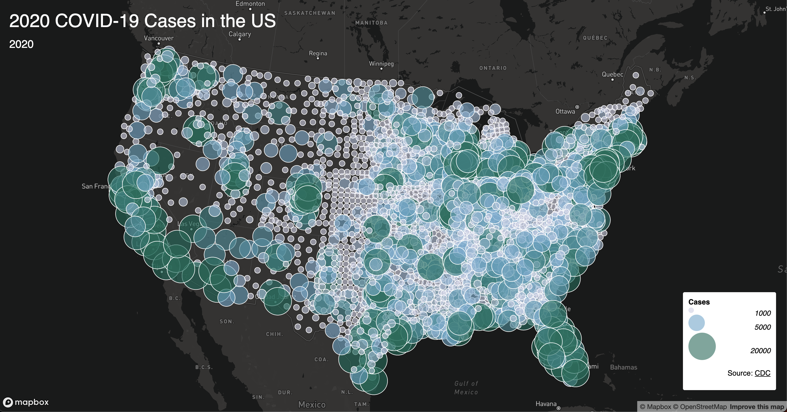

An interactive county-level visualization of COVID-19 case rates across the United States for 2020, built with Mapbox GL JS and an Albers Equal Area projection for accurate geographic representation.

This project visualizes county-level COVID-19 rates across the United States for 2020 using an interactive choropleth map. The map highlights the geographic distribution of COVID-19 cases per 100,000 people, allowing users to explore regional disparities at a county level.
The map uses an Albers Equal Area projection for accurate area representation across the contiguous US — projection handling that was implemented independently, beyond what was covered in the course lectures. Users can hover over any county to see the county name, state, and COVID-19 rate in a live tooltip.
Mapbox for providing the interactive mapping platform and styling tools.
NY Times and the US Census Bureau for open COVID-19 and geographic boundary data.
Project completed as part of GEOG 458 at the University of Washington.